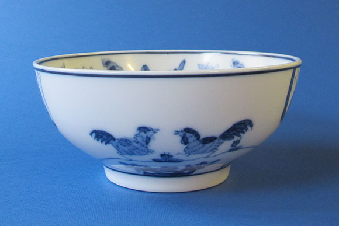
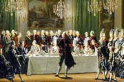
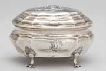

Simply Scandinavia would like to beautify your home and decorate it with porcelain objects of classic style. Beautiful pots, plates, bowls and other decorative items. We base our products on traditional design and they are handmade like in the old times. Simply Scandinavia is a Swedish company with production in China.

A royal dinner
During the 18th century a royal dinner was a highly regimented and traditional affair. It was during this time that the dinner service originated and became popular – not only in royal circles but also in the upper middle classes.

Silver shapes
The first export porcelain designs were based upon existing European silverware, plates, tureens, parfait dishes, rinsing bowls etc. The shape and the patterns were characteristic of Chinese export porcelain.